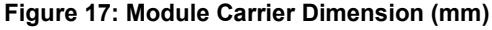

The Qorvo® DWM3000 is a fully integrated Ultra-Wideband (UWB) transceiver module based on the Qorvo® DW3110 IC. It integrates antenna, all RF circuitry, power management and clock circuitry in one module simplifying integration. It can be used in 2-way ranging or TDoA location systems to locate assets to a precision of 10 cm and supports data rates of up to 6.8 Mbps.
The DWM3000 is designed to be compliant to the FiRa™ PHY and MAC specifications enabling interoperability with other FiRa™ compliant devices.
Top View
24 Pin 23 x 13 mm side castellated package
| PART NUMBER | DESCRIPTION |
|---|---|
| DWM3000SB | 5 pcs bag |
| DWM3000SQ | 25 pcs bag |
| DWM3000SR | 100 pcs on a 7'' reel |
| DWM3000TR13 | 500 pcs on a 13'' reel |
| DWM3000EVB | Evaluation board |
| 1 | Overview 3 | |
|---|---|---|
|
1.1
DWM3000 Functional Description 3 |
||
|
1.2
DWM3000 Power Up 3 |
||
|
1.3
SPI Host Interface 5 |
||
|
1.3.1
SPI Timing Parameters 5 |
||
|
1.3.2
SPI Operating Modes 6 |
||
|
1.3.3
SPI Transaction Formatting 7 |
||
|
1.4
General Purpose Input Output (GPIO) 8 |
||
|
1.5
Always-On (AON) Memory 8 |
||
|
1.6
One-Time Programmable (OTP) Memory 8 |
||
|
1.7
Interrupts and Device Status 8 |
||
|
1.8
MAC 8 |
||
| 2 | DWM3000 Calibration 9 | |
|
2.1
Crystal Oscillator Trim 9 |
||
|
2.2
Transmitter Calibration 9 |
||
|
2.3
Antenna Delay Calibration 9 |
||
| 3 | DWM3000 Pin Connections10 | |
|
3.1
Pin Numbering10 |
||
|
3.2
Pin Descriptions11 |
||
| 4 | Electrical Specifications13 |
|
4.1
4.2 |
Nominal Operating Conditions13
DC Characteristics13 |
||
|---|---|---|---|
| 4.3 | Receiver AC Characteristics14 | ||
| 4.4 | Reference Clock AC Characteristics14 | ||
|
4.4.1
Reference Frequency14 |
|||
| 4.5 | Transmitter AC Characteristics14 | ||
| 4.6 | Absolute Maximum Ratings15 | ||
| 5 | Antenna Performance16 | ||
| 6 | Application Information19 | ||
| 6.1 | Application Board Layout Guidelines 19 | ||
| 6.2 | Application Circuit Diagram 20 | ||
| 6.3 | GPIO and SPI I/O Internal Pull Up / Down 20 | ||
| 7 | Package Information 21 | ||
| 7.1 | Module Drawings 21 | ||
| 7.2 | Module Land Pattern22 | ||
| 7.3 | Module Marking Information22 | ||
| 7.4 | Module Solder Profile23 | ||
| 7.5 | Tape and Reel Information24 | ||
| 8 | Glossary 25 | ||
| 9 | Revision History 26 | ||
| 10 | Further Information 26 | ||
| Figure 1: Timing diagram for cold start POR4 | |
|---|---|
| Figure 2: Timing diagram for warm start 4 | |
| Figure 3: SPI Timing Diagram5 | |
| Figure 4: SPI Detailed Timing Diagram5 | |
| Figure 5: DW3000 SPIPHA=0 Transfer Protocol 6 | |
| Figure 6: DW3000 SPIPHA=1 Transfer Protocol 7 | |
| Figure 7: SPI Command Formatting 7 | |
| Figure 8: DWM3000 Pin Diagram 10 | |
| Figure 9: Carrier Board Dimensions and Radiation | |
| Pattern Planes 16 |
| Table 1: SPI Timing Parameters 6 | |
|---|---|
| Table 2: DWM3000 Pin Functions 11 | |
| Table 3: Explanation of Abbreviations 12 | |
| Table 4: DWM3000 Operating Conditions 13 | |
| Table 5: DWM3000 DC Characteristics 13 | |
| Table 6: DWM3000 Receiver AC Characteristics 14 | |
| Table 7: Reference Clock AC Characteristics14 |
| Table 8: DWM3000 Transmitter AC Characteristics 14 | |
|---|---|
| Table 9: DWM3000 Absolute Maximum Ratings 15 | |
| Table 10 Antenna Radiation Patterns - Channel 5 17 | |
| Table 11 Antenna Radiation Patterns - Channel 9 18 | |
| Table 12: Glossary of Terms 25 | |
The DWM3000 module is an IEEE 802.15.4-2011 and IEEE 802.15.4z (BPRF mode) UWB implementation. RF components, Qorvo DW3110 UWB transceiver, and other components reside on-module. DWM3000 enables cost effective and reduced complexity integration of UWB communications and ranging features, greatly accelerating design implementation.
The DW3110 on-board the DWM3000 is a fully integrated low-power, single chip CMOS RF transceiver IC. The DWM3000 module requires no RF design as the antenna and associated analog and RF components are on the module.
The module contains an on-board 38.4 MHz reference crystal. The crystal has been trimmed in production to reduce the initial frequency error to approximately 2 ppm, using the DW3110 IC's internal on-chip crystal trimming circuit, see section 2.1.
Always-On (AON) memory can be used to retain DWM3000 configuration data during the lowest power operational states when the on-chip voltage regulators are disabled. This data is uploaded and downloaded automatically. Use of DWM3000 AON memory is configurable.
The on-chip voltage and temperature monitors allow the host to read the voltage on the VDD1 pin and the internal die temperature information from the DW3110.
See the DW3000 datasheet for more detailed information on device functionality, electrical specifications, and typical performance.
DWM3000 is designed such that it can be powered in a number of different configurations depending on the application. These options are described below . Figure 1 shows the power up sequence when external power sources are applied. The power supply design should ensure that VDD2a/b and VDD3 are stable less than 10 ms after VDD1 (3.3 V) comes up, otherwise a device reset is required.
When the external power source is applied to the DWM3000 for the first time (cold power up), the internal Power On Reset (POR) circuit compares the externally applied supply voltage (VDD1) to an internal power-on threshold (approximately 1.5 V), and once this threshold is passed, the AON block is released from reset and the external device enable pin EXTON is asserted.
Then the VDD2a/b and VDD3 supplies are monitored and once they are above the required voltage as specified in the datasheet (2.2 V and 1.4 V respectively), the fast RC oscillator (FAST_RC) and crystal (XTAL Oscillator) will come on within 500 µs and 1 ms respectively.
The DWM3000 digital core will be held in reset until the crystal oscillator is stable. Once the digital reset is de-asserted the digital core wakes up and enters the INIT_RC state, (see Figure 1 an d Figure 2). Then once the configurations stored in AON and OTP have been restored (into the configuration registers) the device will enter IDLE_RC. Then the host can set the AINIT2IDLE configuration bit in SEQ_CTRL and the IC will enable the CLKPLL and wait for it to lock before entering the IDLE_PLL state.
The host interface to DWM3000 is a 4-wire SPI-compatible slave. The assertion of SPICSn low by the SPI master indicates the beginning of a transaction.
The SPI interface is used to read and write registers in the DW3110 device. All data and address transfers on the SPI are most significant bit first. All address bytes are transmitted with MSB first, and all data is transmitted commencing with lowest addressed byte.
The SPIMISO I/O is required to go open-drain when SPICSn is de-asserted, to allow interoperation with other slaves on the SPI bus. SPI daisy chaining is not supported. This is the mode where the MISO, MOSI lines are passed through a device when it is not chip selected.
The SPI slave complies with the Motorola SPI protocol within the constraints of the timing parameters listed in Table 1 and illustrated in Figure 3 and Figure 4.
Figure 4: SPI Detailed Timing Diagram
| Parameter | Min. | Typ. | Max. | Unit | Description |
|---|---|---|---|---|---|
| t1 | 3 | ns | SPI select asserted low to valid slave output data. | ||
| t2 | 3 | ns | SPICLK low to valid slave output data. | ||
| t3 | 14 | ns | Master data setup time. | ||
| t4 | 2 | ns | Master data hold time. | ||
| t5 | 27 | ns | LSB last byte to MSB next byte. | ||
| t6 | 3 | ns | SPICSn de-asserted high to MISO tristate. | ||
| t7 | 14 | ns | Start time; time from select asserted to first SPICLK. | ||
| t8 | 24 | ns | Last SPICLK to SPICSn de-asserted. | ||
| t9 | 24 | ns | Idle time between consecutive accesses. | ||
| t10 | 38 | MHz | SPI CLK Fmax @1.8 V VDD1, 25C, SPI mode 0. |
Both clock polarities (SPIPOL=0/1) and phases (SPIPHA=0/1) are supported, as defined in the Motorola SPI protocol. The DW3110 transfer protocols for each SPIPOL and SPIPHA setting are given in Figure 5 and Figure 6.
Figure 6: DW3000 SPIPHA=1 Transfer Protocol
The SPI command structure allows for 4 different types of SPI command:
Figure 7: SPI Command Formatting
The DWM3000 provides 8 configurable pins.
On reset, all GPIO pins default to input. GPIO inputs, when appropriately configured, are capable of generating interrupts to the host processor via the IRQ signal.
See DW3000 datasheet and DW3000 user manual for full details of the configuration and use of the GPIO lines.
Configuration retention in lowest power states is enabled in DWM3000 by provision of an Always-On (AON) memory array with a separate power supply, VDD1. The DWM3000 may be configured to upload its configuration to AON before entering a low-power state and to download the configuration when waking up from the low–power state.
The DWM3000 contains a 128x32-bit user programmable OTP memory that is used to store per chip calibration information.
DWM3000 has a number of interrupt events that can be configured to drive the IRQ output pin. The default IRQ pin polarity is active high. A number of status registers are provided in the system to monitor and report data of interest. See DW3000 user manual for a full description of system interrupts and their configuration and of status registers.
A number of MAC features are implemented including CRC generation, CRC checking and receive frame filtering. See the DW3000 datasheet and DW3000 user manual for full details.
Depending on the end-use applications and the system design, DWM3000 settings may need to be tuned. To help with this tuning a number of built-in functions such as continuous wave TX and continuous frame transmission can be enabled. See the DW3000 user manual for further details.
The DWM3000 has crystal oscillator trimmed during module production but no transmit power or antenna delay calibration.
DWM3000 modules are calibrated at production at room temperature to minimise initial frequency error to reduce carrier frequency offset between modules and thus improve receiver sensitivity. The calibration carried out at module production will trim the initial frequency offset to less than 2 ppm, typically.
In order to maximize range, DWM3000 transmit power spectral density (PSD) should be set to the maximum allowable for the geographic region in which it will be used. For most regions this is -41.3 dBm/ MHz.
As the module contains an integrated antenna, the transmit power can only be measured over the air. The Effective Isotropic Radiated Power (EIRP) must be measured, and the power level adjusted to ensure compliance with applicable regulations.
The DWM3000 provides the facility to adjust the transmit power in coarse and fine steps; 2 dB and 0.5 dB nominally. It also provides the ability to adjust the spectral bandwidth. These adjustments can be used to maximize transmit power whilst meeting regulatory spectral mask.
If required, transmit calibration should be carried out on a per DWM3000 module basis, see DW3000 user manual for full details.
In order to measure range accurately, precise calculation of timestamps is required. To do this the antenna delay must be known. The DWM3000 allows this delay to be calibrated and provides the facility to compensate for delays introduced by PCB, external components, antenna and internal DWM3000 delays.
To calibrate the antenna delay, range is measured at a known distance using two DWM3000 systems. Antenna delay is adjusted until the known distance and reported range agree. The antenna delay can be stored in OTP memory.
Antenna delay calibration must be carried out as a once-off measurement for each DWM3000 design implementation. If required, for greater accuracy, antenna delay calibration should be carried out on a per DWM3000 module basis, see DW3000 user manual for full details.
DWM3000 module pin assignments are as follows (viewed from top):
Figure 8: DWM3000 Pin Diagram
|
Signal
Name |
Pin |
I/O
(Default) |
Description | ||||
|---|---|---|---|---|---|---|---|
| Digital Interface | |||||||
| SPICLK | 20 | DI | SPI clock | ||||
| SPIMISO | 19 |
DO
(O–L) |
SPI data output. | ||||
| SPIMOSI | 18 | DI | SPI data input. | ||||
| SPICSn | 17 | DI |
SPI chip select. This is an active low enable input. The high-to-low transition on
SPICSn signals the start of a new SPI transaction. SPICSn can also act as a wake-up signal to bring DW3110 out of either SLEEP or DEEPSLEEP states. |
||||
| WAKEUP | 2 | DIO |
When asserted into its active high state, the WAKEUP pin brings the DW3110 out
of SLEEP or DEEPSLEEP states into operational mode. If unused, this pin can be tied to ground. |
||||
| EXTON | 1 |
DO
(O-L) |
External device enable. Asserted during wake-up process and held active until
device enters sleep mode. Can be used to control external DC-DC converters or other circuits that are not required when the device is in sleep mode so as to minimize power consumption. |
||||
| GPIO8 / IRQ | 22 |
DIO
(O-L) |
Interrupt Request output from the DWM3000 to the host processor. By default,
IRQ is an active-high output but may be configured to be active low if required. For correct operation in SLEEP and DEEPSLEEP modes it should be configured for active high operation. This pin will float in SLEEP and DEEPSLEEP states and may cause spurious interrupts unless pulled low externally (100 kΩ recommended). When the IRQ functionality is not being used the pin may be reconfigured as a general purpose I/O line, GPIO8. |
||||
|
GPIO7 /
SYNC |
4 |
DIO
(I) |
Defaults to operate as a SYNC input. This pin may be reconfigured as a general
purpose I/O pin under software control. |
||||
|
GPIO6 /
EXTRXE / SPIPHA |
9 |
DIO
(I) |
General purpose I/O pin.
On power-up it acts as the SPIPHA (SPI phase selection) pin for configuring the SPI mode of operation. After power-up, the pin will default to a General Purpose I/O pin. On engineering samples E1.0 GPIO6 is on pin 10. |
||||
|
GPIO5 /
EXTTXE / SPIPOL |
10 |
DIO
(I) |
General purpose I/O pin.
On power-up it acts as the SPIPOL (SPI polarity selection) pin for configuring the SPI operation mode. After power-up, the pin will default to a General Purpose I/O pin. On engineering samples E1.0 GPIO5 is on pin 9. |
||||
| GPIO4 | 11 |
DIO
(I) |
General purpose I/O pin. | ||||
|
GPIO3 /
TXLED |
12 |
DIO
(I) |
General purpose I/O pin.
It may be configured for use as a TXLED driving pin that can be used to light a LED following a transmission. |
||||
|
GPIO2 /
RXLED |
13 |
DIO
(I) |
General purpose I/O pin.
It may be configured for use as a RXLED driving pin that can be used to light a LED during receive mode. |
||||
|
Signal
Name |
I/O
Pin (Default) |
Description | |||||
|---|---|---|---|---|---|---|---|
|
GPIO1 /
SFDLED |
14 |
DIO
(I) |
General purpose I/O pin.
It may be configured for use as a SFDLED driving pin that can be used to light a LED when SFD (Start Frame Delimiter) is found by the receiver. |
||||
|
GPIO0 /
RXOKLED |
15 |
DIO
(I) |
General purpose I/O pin.
It may be configured for use as a RXOKLED driving pin that can be used to light a LED on reception of a good frame. |
||||
| RSTn | 3 |
DIO
(O-H) |
Reset pin. Active Low Output.
May be pulled low by external open drain driver to reset the DW3000. |
||||
| Power Supplies | |||||||
| VDD1 | 5 | P | External supply for the Always-On (AON) portion of the chip. | ||||
| VDD3V3 | 6,7 | P | 3 V supply pins. | ||||
| Ground | |||||||
| GND | 8,16, 21,23,24 | G | Common ground. | ||||
| Abbreviation | Explanation |
|---|---|
| I | Input |
| IO | Input / Output |
| O | Output |
| G | Ground |
| P | Power Supply |
| PD | Power Decoupling |
| O-L | Defaults to output, low level after reset |
| O-H | Defaults to output, high level after reset |
| I | Defaults to input. |
Note: Any signal with the suffix 'n' indicates an active low signal.
| Parameter | Min. | Typ. | Max. | Units |
Condition
/ Note |
|---|---|---|---|---|---|
| Operating temperature | -40 | +85 | ˚C | ||
| Supply voltage VDD1 | 1.62 | 3.6 | V | ||
| Supply voltage VDD3V3 | 2.5 | 3.6 | V | ||
| Voltage on digital pins | 3.6 | V |
Note: Unit operation is guaranteed by design when operating within these ranges
Tamb = 25 ˚C, all supplies centered on typical values
| Parameter | Min. | Typ. | Max. | Units |
Condition
/ Note |
|---|---|---|---|---|---|
| Supply current DEEP SLEEP mode | 260 | nA | |||
| Supply current SLEEP mode | 850 | nA | |||
| Supply current CH5 IDLE mode | 12 | mA |
Total current drawn from all
supplies. |
||
| Supply current CH9 IDLE mode | 20 | mA | |||
| Supply current CH5 INIT mode | 6 | mA | |||
| Supply current CH9 INIT mode | 6 | mA | |||
|
CH5 TX: 3.3 V supplies
(VDD1, VDD3V3) |
40 | mA | |||
|
CH9 TX: 3.3 V supplies
(VDD1, VDD3V3) |
45 | mA | |||
|
CH5 RX: 3.3 V supplies
(VDD1, VDD3V3) |
50 | mA |
Receiver active, no frames
received |
||
|
CH9 RX: 3.3 V supplies
(VDD1, VDD3V3) |
55 | mA |
Receiver active, no frames
received |
||
| Digital input voltage high | 0.7*VDD1 | V | |||
| Digital input voltage low | 0.3*VDD1 | V | |||
| Digital output voltage high | 0.7*VDD1 | V | Assumes 500 Ω load | ||
| Digital output voltage low | 0.3*VDD1 | V | Assumes 500 Ω load | ||
| Digital Output Drive Current GPIOx, IRQ | 0.8 | mA | |||
| Digital Output Drive Current SPIMISO | 8 | 10 | mA | ||
| Digital Output Drive Current EXTON | 3 | 4 | mA |
Tamb = 25 ˚C, all supplies centered on nominal values
| Parameter | Min. | Typ. | Max. | Units |
Condition
/ Note |
|---|---|---|---|---|---|
| Centre Frequency CH5 | 6489.6 | ||||
| Centre Frequency CH9 | 7987.2 | MHz | |||
| Channel bandwidth | 500 | Channel 5 and 9 |
Tamb = 25 ˚C, all supplies centered on typical values
| Parameter | Min. | Typ. | Max. | Units |
Condition
/ Note |
|---|---|---|---|---|---|
| On-board crystal oscillator reference frequency | 38.4 | MHz | |||
| On-board crystal aging | ±1 | ppm in 1st year |
Tamb = 25 ˚C, all supplies centered on typical values
| Parameter | Min. | Typ. | Max. | Units |
Condition
/ Note |
|---|---|---|---|---|---|
| Frequency range | 6250 | 8250 | MHz | ||
| Channel Bandwidths | 500 | MHz | Channel 5 and 9 |
| Parameter | Min. | Max. | Units |
|---|---|---|---|
|
Voltage
VDD3V3 / VDD1 |
-0.3 | 4.0 | V |
| Receiver Power | 0 | dBm | |
| Temperature - Storage temperature | -40 | +125 | ˚C |
| Temperature - Operating temperature | -40 | +85 | ˚C |
| ESD (Charged Device Model) | 1000 | V |
Stresses beyond those listed in this table may cause permanent damage to the device. This is a stress rating only; functional operation of the device at these or any other conditions beyond those indicated in the operating conditions of the specification is not implied. Exposure to the absolute maximum rating conditions for extended periods may affect device reliability.
This section presents antenna radiation patterns for the DWM3000. As is illustrated in Figure 9, measured radiation patterns were made with the module mounted on a DWM3000EVB evaluation board.
Table 10 and Table 11 show antenna radiation patterns in channels 5 and 9, respectively. Three planes in spherical space about the centre of the board are measured, with theta and phi plots representing perpendicular polarisations.
The DWM3000 antenna is vertically polarised, meaning that the module is intended to be positioned vertically upright when used in an RTLS system. An omnidirectional radiation pattern is seen in the XZ plane when observed by another antenna which is also vertically polarised. This is shown in the XZ plane antenna patterns, where the vertically polarised plot, phi, has a circular, or omnidirectional shape.
If the antennas are oriented perpendicular relative to each other, then the polarisation changes. In this case, the horizontally polarised pattern, theta, applies and there are nulls at certain angles which can limit range and introduce location inaccuracy.
Figure 9: Radiation Pattern Planes
Table 10: Antenna Radiation Patterns - Channel 5
Table 11: Antenna Radiation Patterns - Channel 9
When designing the PCB onto which DWM3000 will be soldered, the proximity of the DWM3000 on-board ceramic monopole antenna to metal and other non-RF transparent materials needs to be considered carefully. Two suggested placement schemes are shown below.
The placement schemes in Figure 10 show an application board with no non-RF transparent material in the keep-out area, or an application board with the antenna projecting off of the board so that the keep out area is in free-space. In this second scheme it is still important not to place metal components above or below the antenna in a system implementation. It is also important to note that the ground plane on the application board affects the DWM3000 antenna radiation pattern. In Figure 10 below, 'd' should ideally be 10 mm. This gives the most vertically polarized radiation pattern. As 'd' is increased from 10 mm the degree of vertical polarization reduces.
Figure 10: Application Board Keep-Out Areas
A simple application circuit integrating the DWM3000 module need only power the device and connect the device to a host controller, see Figure 11.
Figure 11: Example DWM3000 Application Circuit
All of the GPIO pins have a software controllable internal pull up/down resistor to ensure safe operation when input pins are not driven. This defaults to enabled and pull-down except for the SPICSn pin which defaults to pull-up. The value of the pull-up / down will vary with the VDD1 supply voltage over a range from 10 kΩ to 30 kΩ.
Figure 12: SPI and GPIO Pull Up / Down
Figure 13: Module Package Size (mm)
The diagram below shows the DWM3000 module land pattern.
Figure 14: Module Land Pattern (units: mm)
The module is identified by a sticker on the shield can which gives the part number and serial number as follows: "YY" is year, "WW" is calendar week number (week code per ISO-8601), "3" is DWM3000, SSSSS is serial number: 00001, 00002…….
| Range | Condition |
|---|---|
| [ C] | [ ] |
| [s] | |
| [ C] | [s] |
| [°C] | [s] |
Figure 16: DWM3000 Module Solder Profile

Figure 18: Module Tape Carrier Dimension (mm)
| Abbreviation | Full Title | Explanation |
|---|---|---|
| EIRP |
Equivalent Isotropic
Radiated Power |
The amount of power that a theoretical isotropic antenna (which evenly distributes power in
all directions) would emit to produce the peak power density observed in the direction of maximum gain of the antenna being used. |
| ETSI |
European
Telecommunication Standards Institute |
Regulatory body in the EU charged with the management of the radio spectrum and the
setting of regulations for devices that use it. |
| FCC |
Federal
Communications Commission |
Regulatory body in the USA charged with the management of the radio spectrum and the
setting of regulations for devices that use it. |
| GPIO |
General Purpose
Input / Output |
Pin of an IC that can be configured as an input or output under software control and has no
specifically identified function. |
| IEEE |
Institute of
Electrical and Electronic Engineers |
Is the world's largest technical professional society. It is designed to serve professionals
involved in all aspects of the electrical, electronic and computing fields and related areas of science and technology. |
| PLL |
Phase Locked
Loop |
Circuit designed to generate a signal at a particular frequency whose phase is related to an
incoming "reference" signal. |
| PPM | Parts Per Million |
Used to quantify very small relative proportions. Just as 1% is one out of a hundred, 1 ppm
is one part in a million. |
| RF | Radio Frequency |
Generally used to refer to signals in the range of 3 kHz to 300 GHz. In the context of a
radio receiver, the term is generally used to refer to circuits in a receiver before down-conversion takes place and in a transmitter after up-conversion takes place. |
| RTLS |
Real Time Location
System |
System intended to provide information on the location of various items in real-time. |
| SFD |
Start of Frame
Delimiter |
Defined in the context of the IEEE 802.15.4-2011 standard. |
| SPI |
Serial Peripheral
Interface |
An industry standard method for interfacing between IC's using a synchronous serial
scheme first introduced by Motorola. |
| TCXO |
Temperature
Controlled Crystal Oscillator |
A crystal oscillator whose output frequency is very accurately maintained at its specified
value over its specified temperature range of operation. |
| TWR | Two Way Ranging |
Method of measuring the physical distance between two radio units by exchanging
messages between the units and noting the times of transmission and reception. Refer to Qorvo's website for further information. |
| TDoA |
Time Difference of
Arrival |
Method of deriving information on the location of a transmitter. The time of arrival of a
transmission at two physically different locations whose clocks are synchronized is noted and the difference in the arrival times provides information on the location of the transmitter. A number of such TDoA measurements at different locations can be used to uniquely determine the position of the transmitter. Refer to Qorvo's website for further information. |
| UWB | Ultra-Wideband | A radio scheme employing channel bandwidths of, or in excess of, 500 MHz. |
| WSN |
Wireless Sensor
Network |
A network of wireless nodes intended to enable the monitoring and control of the physical
environment. |
| Revision | Change Description | |
|---|---|---|
| A | Preliminary version | |
| B | May 2021 | Updated for production release, completion of outstanding information. |
Qorvo develops semiconductors solutions, software, modules, reference designs - that enable real-time, ultra-accurate, ultra-reliable local area micro-location services. Qorvo's technology enables an entirely new class of easy to implement, highly secure, intelligent location functionality and services for IoT and smart consumer products and applications.
For further information on this or any other Qorvo product, please refer to our websit e www.qorvo.com.
| Parameter | Rating | Standard |
|---|---|---|
| ESD - Charged Device Model (CDM) | 1000V | ANSI/ESDA/JEDEC JS-002 |
| MSL – Moisture Sensitivity Level | Level 3 | IPC/JEDEC J-STD-020 |
The DWM3000, as supplied from Qorvo, has not been certified for use in any particular geographic region by the appropriate regulatory body governing radio emissions in that region although it is capable of such certification depending on the region and the manner in which it is used.
All products developed by the user incorporating the DWM3000 must be approved by the relevant authority governing radio emissions in any given jurisdiction prior to the marketing or sale of such products in that jurisdiction and user bears all responsibility for obtaining such approval as needed from the appropriate authorities.
This part is compliant with 2011/65/EU RoHS directive (Restrictions on the Use of Certain Hazardous Substances in Electrical and Electronic Equipment) as amended by Directive 2015/863/EU.
This product also has the following attributes:
For the latest specifications, additional product information, worldwide sales and distribution locations:
Web: www.qorvo.com
Tel: 1-844-890-8163
Email: customer.support@qorvo.com
The information contained in this Data Sheet and any associated documents ("Data Sheet Information") is believed to be reliable; however, Qorvo makes no warranties regarding the Data Sheet Information and assumes no responsibility or liability whatsoever for the use of said information. All Data Sheet Information is subject to change without notice. Customers should obtain and verify the latest relevant Data Sheet Information before placing orders for Qorvo® products. Data Sheet Information or the use thereof does not grant, explicitly, implicitly or otherwise any rights or licenses to any third party with respect to patents or any other intellectual property whether with regard to such Data Sheet Information itself or anything described by such information.
DATA SHEET INFORMATION DOES NOT CONSTITUTE A WARRANTY WITH RESPECT TO THE PRODUCTS DESCRIBED HEREIN, AND QORVO HEREBY DISCLAIMS ANY AND ALL WARRANTIES WITH RESPECT TO SUCH PRODUCTS WHETHER EXPRESS OR IMPLIED BY LAW, COURSE OF DEALING, COURSE OF PERFORMANCE, USAGE OF TRADE OR OTHERWISE, INCLUDING THE IMPLIED WARRANTIES OF MERCHANTABILITY AND FITNESS FOR A PARTICULAR PURPOSE. Without limiting the generality of the foregoing, Qorvo® products are not warranted or authorized for use as critical components in medical, life-saving, or lifesustaining applications, or other applications where a failure would reasonably be expected to cause severe personal injury or death. Applications described in the Data Sheet Information are for illustrative purposes only. Customers are responsible for validating that a particular product described in the Data Sheet Information is suitable for use in a particular application.
FiRa, FiRa Consortium, the FiRa logo, the FiRa Certified logo, and FiRa tagline are trademarks or registered trademarks of FiRa Consortium or its licensor(s)/ supplier(s) in the US and other countries and may not be used without permission. All other trademarks, service marks, and product or service names are trademarks or registered trademarks of their respective owners.
© 2021 Qorvo US, Inc. All rights reserved. This document is subject to copyright laws in various jurisdictions worldwide and may not be reproduced or distributed, in whole or in part, without the express written consent of Qorvo US, Inc. | QORVO® is a registered trademark of Qorvo US, Inc.